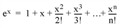

In a computer, real numbers are represented with finite precision. While in most cases it is safe to assume that the result of an arithmetical operation done on your computer is correct, it is important to remember that this finite-precision representation leads to unavoidable errors, especially when floating-point numbers, which are digital approximations to real numbers, are involved.
To understand why floating-point numbers are inherently inaccurate, consider the following:
In other words, floating-point values are finite-precision approximations of infinitely precise numbers.
When working with floating-point arithmetic, it is helpful to consider the quantity known as the machine accuracy or the floating-point accuracy of your particular computer. This is the smallest number that, when added to 1.0, produces a floating-point result that is different from 1.0.
A useful way of thinking about machine accuracy is to consider it to be the fractional accuracy to which floating-point numbers are represented. In other words, the machine accuracy roughly corresponds to a change of the least significant bit of the floating-point mantissa—precisely what can happen if a number with more significant digits than fit in the floating-point mantissa is rounded to fit the space available. Generally speaking, every floating-point arithmetic operation introduces an error at least equal to the machine accuracy into the result. This error is known as roundoff error.
Roundoff errors are cumulative. Depending on the algorithm you are using, a calculation involving n arithmetic operations might have a total roundoff error between SQRT( n ) times the machine accuracy and n times the machine accuracy.
Note that the machine accuracy is not the same as the smallest floating-point number your computer can represent. To find these and other machine-dependent quantities for your own computer, see MACHAR .
Another type of error is also present in some numerical algorithms. Truncation error is the error introduced by the process of numerically approximating a continuous function by evaluating it at a finite number of discrete points. Often, accuracy can be increased (again at some cost of computation time) by increasing the number of discrete points evaluated.
For example, consider the process of calculating

Obviously, the answer becomes more accurate as n approaches infinity. When performing the actual computation, however, a cutoff value must be specified for n . Increasing n reduces truncation error at the expense of computational effort.
Several IDL routines allow you to specify cutoff values in such cases (see, for example, INT_2D . When writing your own routines in IDL, it is important to consider this trade-off between accuracy and computational time.
Below is a brief description of IDL routines for checking math error status and machine characteristics.
|
Returns and clears accumulated math error status. |
|
|
Returns True if its argument is finite. |
|
|
Determines and returns machine-specific parameters affecting floating-point arithmetic. |
Burden, Richard L., J. Douglas Faires, and Albert C. Reynolds. Numerical Analysis . Boston: PWS Publishing, 1993. ISBN 0-534-93219-3
Stoer, J., and R. Bulirsch. Introduction to Numerical Analysis . New York: Springer-Verlag, 1980. ISBN 0-387-90420-4
Press, William H. et al. Numerical Recipes in C: The Art of Scientific Computing . Cambridge: Cambridge University Press, 1992. ISBN 0-521-43108-5